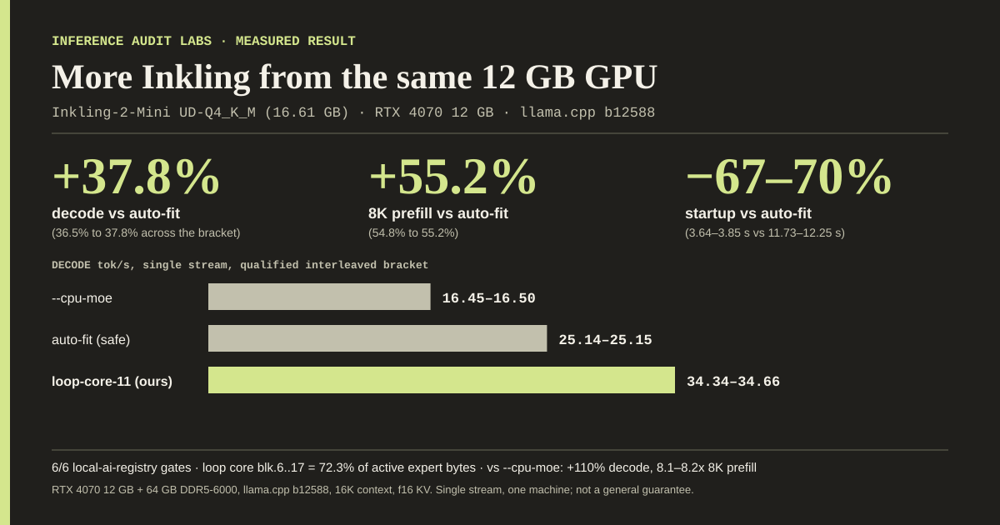

Decode vs auto-fit
+37.8%
Range +36.5% to +37.8% across paired runs.
RTX 4070 12 GB experiment
Inkling-2-Mini reuses 12 transformer blocks three times per token. Keeping those blocks on the GPU, and leaving the once-used blocks in host RAM, beat both llama.cpp auto-fit and --cpu-moe on the same card.
Measured by Inference Audit Labs

Inkling-2-Mini has 24 physical blocks that execute as 48 logical layers. Blocks 6 to 17 form a loop core that runs three times, giving 36 logical passes. Only 6.88 GB of the 14.78 GB of routed experts live in that core, yet it carries 72.3% of expert traffic per token (1,289.9 of 1,783.6 MB). A generic placement spreads VRAM evenly. A loop-aware placement spends the same VRAM on the weights that are read three times.
On this card, 11 of the 12 core blocks (blk.6 to blk.16) plus all 1.82 GB of non-expert weights fit on CUDA0 with a 16,384-token f16 KV cache. The prelude, blk.17 and the postlude experts execute on the CPU from pinned host DDR5 RAM. Measured GPU copy bandwidth was 431 GB/s, so decode speed is dominated by CPU-resident expert bandwidth plus activation transfers between CPU and GPU.
| Configuration | Decode (tok/s) | Prefill (tok/s) | Basis and outcome |
|---|---|---|---|
| --cpu-moe | 16.45, 16.50 | 97.0, 98.0 at 8K | Two qualified controls. All experts on CPU. |
| seq-postlude-6 | 19.25 | 94.8 at 1K | Screening run. Postlude experts on GPU. Not carried forward. |
| moe-cache-6g | 22.47 | 93.3 at 1K | Screening run. Expert cache. Not carried forward. |
| llama.cpp auto-fit | 25.14, 25.15 | 514.5, 496.1 at 8K | Two qualified controls. Startup 11.7 to 12.3 s. |
| loop-core-11 (qualified winner) | 34.34, 34.66 | 798.5, 796.3 at 8K | Two qualified runs. Startup 3.6 to 3.8 s. 6/6 gates. |
| loop-core-12 (boundary) | 37.00 | 682.7 at 8K | Faster, but hit the VRAM safety stop with 954 MiB free. Rejected. |
Screening runs use a shorter 1K prefill probe and a single pass, so they are not directly comparable with the 8K qualified runs.
Decode vs auto-fit
+37.8%
Range +36.5% to +37.8% across paired runs.
8K prefill vs auto-fit
+55.2%
Range +54.8% to +55.2%.
Versus --cpu-moe
2.1x
Decode 2.1x, 8K prefill 8.1–8.2x faster.
Speed is only useful if the model still works. The winning configuration was held to the same checks as a production candidate.
Winning configuration loop-core-11-nommap-ub512. Eleven loop-core expert blocks stay on the GPU. The prelude, blk.17 and the postlude experts are pinned to host RAM.
--jinja --no-mmproj -c 16384 -np 1 --reasoning-effort low --fit off -ngl all -ot "blk\.([0-5]|1[7-9]|2[0-3])\.ffn_.*_exps\.=CPU" --load-mode none -fa on -b 512 -ub 512 -t 8 -tb 8
Model: Unsloth Inkling-2-Mini UD-Q4_K_M GGUF, 16,610,543,328 bytes. Hardware: RTX 4070 12 GB, Ryzen 7 7800X3D, 64 GB DDR5-6000. Engine: llama.cpp b12588.